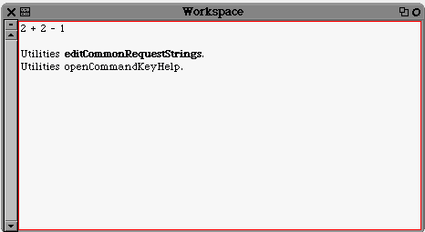
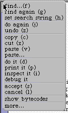
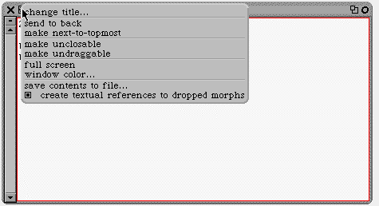

Workspace
El workspace o lugar de trabajo es una ventana donde en el Smalltalk tradicional se ingresan las acciones que se desea que realize el sistema
El aspecto del Workspace en Squeak 3.2 es el siguiente:
Como se puede ver se pueden tipear expresiones simples o comandos complejos.
Para ejecutar se remarca con el mouse lo que se desea ejecutar (se colorea en verde) y luego se elije do it del menu contextual.

Todas las letras ente parentesis representan comandos, para la PC se ejecutan con Alt y ka ketra correspondiente.
Si se remarca en el workspace la orden Utilities openCommandKeyHelp se obtendra una ventana con la lista de comandos por teclado para Squeak.
Este es el menú del Workspace.
Observar que está seleccionado "create textual references to dropped morphs", esto es sumamente útil cuando se está probando y se desea trabajar con morphs utilizando la identificación que crea el propio sistema para todos sus objetos.